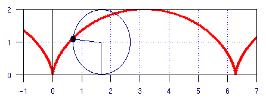

If you drew a dot on the edge of a wheel and traced the path of the dot as the wheel rolled one complete revolution along a line, then the path formed would be called a cycloid (shown above), combining both forward and circular motion. What is the length of the path formed by one complete revolution? Assume the wheel has a radius of 1. (Answer), (Solution)
.
Initial Level setup Turn 1 Turn 2 Turn 3 ----- ------- ------ ------ ------ 2 a 1 d d 0 abc ab a -1 dIt turns out you need 2 checkers to get to level 1, 4 to get to level 2, 8 to get to level 3, 20 to get to level 4, but it is impossible to get to level 5. The question is to prove that it is impossible to get to level 5. (Answer & Solution)
Note: I have had more e-mail on this problem than any other.
.
Michael Shackleford, A.S.A., 10/20/1998
MathProblems.info home